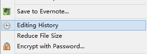
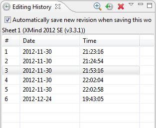
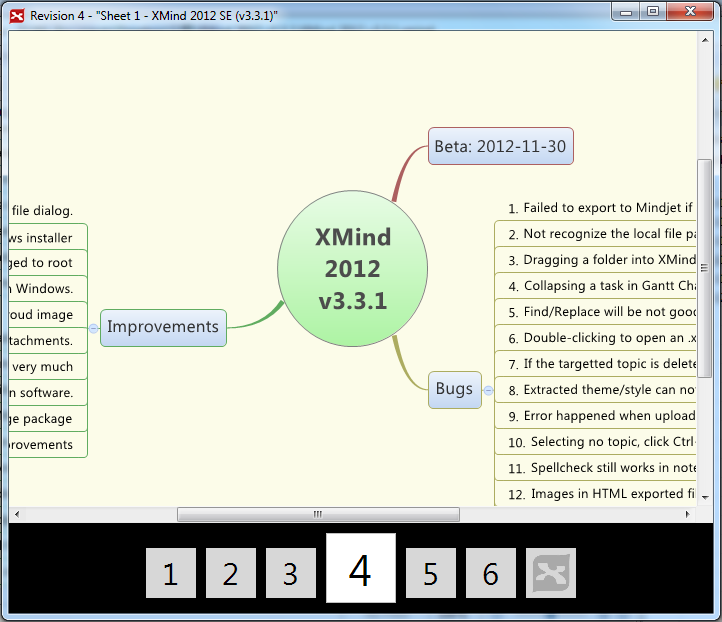

履歴の編集
XMind は編集履歴として保存されたすべてのリビジョンのファイルを格納できます。すべてのリビジョンを元に戻すことや削除が簡単にできます。
履歴画面を開くメニューの[ファイル] →[履歴の編集]をクリックします。
履歴の取り扱いリビジョンを選択し、ツールバーボタンをクリックすることで、プレビュー、リビジョンに戻す、リビジョンの削除ができます。
リビジョンのナビゲート左右の矢印キーで、リビジョンを切り替えることができます。
注:
- すべての更新履歴は、.xmind ファイルに保存されます。リビジョンが増えると、ファイル サイズは増加します。ファイル サイズが大きすぎる場合、不要なリビジョンを削除してください。
- この機能を無効にする場合は、ビューの下部の「このワークブックの保存時に、新しいリビジョンを保存します。」チェック ボックスをオフしてください。